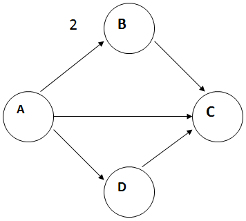

Graph Theory
What is Graph Theory?
- Graphs are extremely important in Computer Science.
- Graphs can assist in finding a way/new approaches to represent the solution to a problem
- Graph theory can also lead us directly to a solution.
- Graph theoretical ideas are highly utilized by computer science applications, especially in research areas of computer science, such as data mining, image segmentation, clustering, image capturing, networking etc.,
- For example a data structure can be designed in the form of tree which in turn utilize vertices and edges.
- Similarly modelling of network topologies can be done using graph concepts.
- If you follow the flow of a program in terms of the different constructs it contains the internal structure of a program (abstract syntax tree)…
- this will be covered soon in the form of State transition, Finite state machine, algorithms and complexity and so on.
What is a graph?
- A graph consists of two things
- Nodes (circles or vertices)
- Nodes are sometimes called vertices
- Edges (lines connecting nodes)
- Edges are sometimes called arcs
- An edge may have a direction or not
- A graph whose edges do not have direction is called undirected
- Undirected Graph Example
- Directed Graph Example
- Nodes (circles or vertices)
- The edges can also be weighted or unweighted.
- 
- Degree of a Vertex
- For undirected graph the degree of a node is the number of edges involving in that node.
- So, number of edges of for A will be 2.
- For directed graph we have indegree and outdegree.
- Indegree: number of the edges that arrive to a node
- Outdegree: number of edges that departing from a node
- So, indegree of A will be none
- Outdegree of A will be 2
Some applications where direction are used
- The flow of a program would show direction
- The if statement
- The if statement allows you to run different chunks of code (or no code at all) depending on a condition or conditions. Here's a simple example:
- if ( x < 10 ) { alert ( "x is less than 10" ); }
- You can use the else statement to run an alternative block of code if the condition in the if statement is not met. For example:
- if ( x < 10 ) { alert ( "x is less than 10" ); } else { alert ( "x is 10 or greater" ); }
- The if statement allows you to run different chunks of code (or no code at all) depending on a condition or conditions. Here's a simple example:
Represent Graph by Set
- The nodes (Vertex) can be represented as a set:
- G = <v,E> where V stands for vertices and E stands for Edges
- Vertices are usually labelled as V ={A,B,C,D}
- Set of edges can be represented as E ={<A,B>, <B,C>,<C,B>}. Direction is very important here. We can have a directed or undirected graph. Lets go for some examples.
- Example :
- G = <V,E> where,
- V ={A,B,C,D} and
- E ={(A,B),(C,B),(A,D),(D,B),(D,C)},
- and graph G is directed here
- How are we going to draw the graph?
- More on Edge
- An edge may be labelled by a pair of vertices, for instance e = (v, w) where e stands for edge, v and w stands for vertices
- e is said to be incident on v and w
- Isolated vertex = a vertex without incident edges
- Parallel edges
- Two or more edges joining a pair of vertices. In the example below, a and b are joined by two parallel edges
- Loops
- An edge that starts and ends at the same vertex. In the example, vertex d has a loop.
What is Path?
- Definition:
- A path p through a graph is a traversal of consecutive vertices along a sequence of edges.
- By this definition, the vertex at the end of one edge in the sequence must also be the vertex at the beginning of the next edge in the sequence
- The vertices that begin and end the path are termed the initial vertex and terminal vertex, respectively.
- A path p through a graph is a traversal of consecutive vertices along a sequence of edges.
- Path example
- From the graph below, P = {A,D,B} is a path, P = {A,D,C,B} is a path
- P ={A,B,C} is not a path
- P ={A,D,A} is ?
- P ={D,B,A} is ?
What is Reachability?
- Definition:
- If a vertex is reachable from another vertex then a path exists from the one vertex to the other vertex.
- Also, if vertex B is reachable from vertex A and vertex C is reachable from vertex B, then it follows that vertex C is reachable from vertex A.
- In the road map example, a driver can reach west Drayton from Brunel, and the same driver can reach Heathrow from west Drayton. Therefore, Heathrow is considered by the driver to be reachable from Brunel.
- The definition of reachability holds true for both directed and undirected graphs.

What is Hamiltonian Cycle?
- Suppose we visit every node once and only once.
- We start at a node n and finish up at n.
- In such a case, we have completed a Hamiltonian cycle
- So lets perform a Hamiltonian cycle from the graph below
- Lets start with 1, then move to 6, then to 5, then to 3, then to 2, then 4 and back to 1
- Another example:
- A further example
- Input
- Output
- Input
What is Flow graph?
- Start node : indegree of zero (no edges leading in)
- Stop node : outdegree of zero (no edges leading out)
- Procedure node : outdegree = 1
- Predicate node : outdegree > 1 (makes a decision)
- Control Flow Graphs (CFGs): Sequencing
- Given part of a program in the form of s1;s2 (statements s1 and s2) we:
- include an arc from the node for s1 to the node for s2
- Example: x=1; x=x+1; is represented by:
- If then: an example
- The CFG means:
- We start
- Then we check (x>0)
- We might then:
- End or
- Execute x=1; followed by End
- While loop: example
- while (x>0) {x=x-2;}
- The CFG means:
- We start
- Then we check (x>0)
- We might then:
- End or
- Execute x=x-2 then return to check (x>0)
- Given part of a program in the form of s1;s2 (statements s1 and s2) we:
Graph Theory
Summary
- You see graphs everywhere in computing
- The terminology we have learnt helps us to understand these graphs more deeply
- Graphs:
- Introduction and why in computer science
- Structure
- Vertices/edges; direct/indirect
- Degrees of a vertex
- Paths/reachability
- Hamiltonian tour
- Control flow Graph
- You see graph everywhere in computing
- The terminology we have learnt helps us to understand these graphs more deeply
- With the help of Graph
- You will be able to understand:
- State Transition Diagram (STD)
- Finite State Machine (FSM)
- Programming Logic
- Complexity and so on….
- …which will be covered soon.